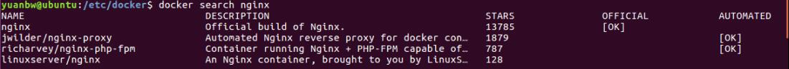
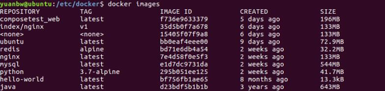
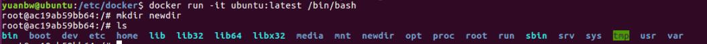
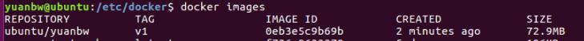
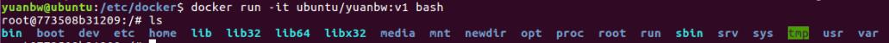
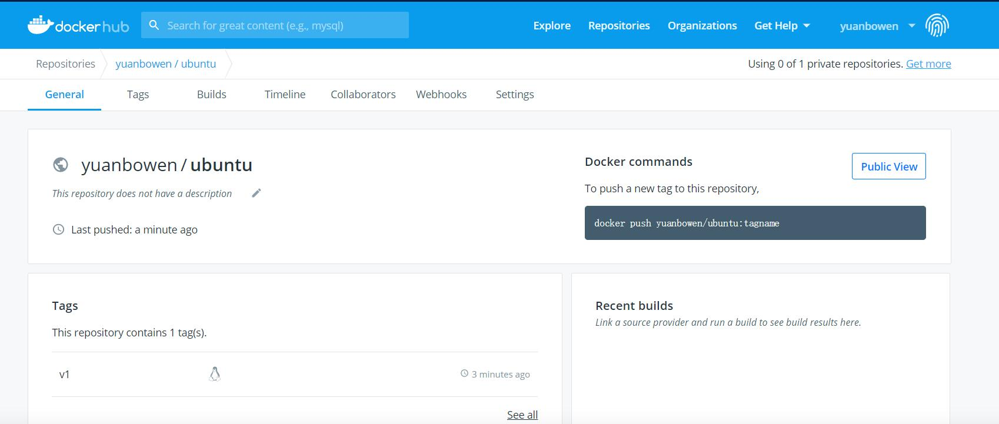

Docker的基本用法
本文主要介绍docker的一些常用命令
一、镜像
查找镜像
搜索docker仓库中的nginx镜像
docker search nginx
- NAME：镜像仓库源的名称
- DESCRIPTION：镜像的描述
- STARS：是否 docker 官方发布
- OFFICIAL：类似 Github 里面的 star
- AUTOMATED：自动构建（dockerhub和github连接，每次github提交就会触发dockerhub构建镜像）
拉取下载镜像
根据NAME拉取对应镜像到本地
docker pull nginx查看本地镜像列表
docker images
- REPOSITORY：表示镜像的仓库源
- TAG：镜像的标签(可理解为版本号)
- IMAGE ID：镜像ID
- CREATED：镜像创建时间
- SIZE：镜像大小
更新镜像
在更新镜像之前，我们需要根据镜像创建一个容器，默认会进入容器
docker run -it ubuntu:latest /bin/bash 此时对该容器进行修改(如：添加一个目录)

退出容器并提交当前容器作为一个新的镜像
docker commit -m="new commit image" -a=“yuanbw” ac19ab59bb64 ubuntu/yuanbw:v1- -m：提交的描述信息
- -a：指定镜像作者
- ac19ab59bb64：容器ID（或者容器name）
- ubuntu/yuanbw:v1：指定要创建的镜像名以及tag
查看新镜像

使用新镜像启动容器并查看目录结构

删除镜像
删除镜像，注意需要先删除以该镜像创建的容器，或者直接强制删除-f
docker rmi ubuntu/yuanbw:v1构建镜像
创建一个文件，命名Dockerfile
yuanbw@ubuntu:~$ cat Dockerfile
FROM ubuntu
RUN echo 'this is my image'
CMD echo 'start my image' 这是一个最简单的Dockerfile，其中FROM表示以哪个镜像作为基础镜像
RUN表示制作镜像的时候，在容器内执行的命令，只执行一次
CMD表示以该镜像启动容器的时候，在容器内执行的命令，每次启动容器执行
还有很多指令就不详细说了
构建镜像
docker build -f ./Dockerfile -t ubuntu/build:v1 .- -f ./Dockerfile：指定Dockerfile的目录及文件名，不指定则是当前目录
- -t ubuntu/build:v1：指定构建后镜像的名称以及tag，不指定则随机生成
- .：指定上下文——docker build会把指定上下文的所有文件都打包给Docker引擎，所以才能获取上下文的文件。因此Dockerfile文件的目录用一个新目录来存放，可以有效减少打包的文件数，以加快build速度（也可以使用.dockerignore文件来忽略打包文件）
yuanbw@ubuntu:~/test$ docker build -t test:v1 .
Sending build context to Docker daemon 2.048kB
Step 1/3 : FROM ubuntu
---> bb0eaf4eee00
Step 2/3 : RUN echo 'this is my image'
---> Running in 4842c2b0a25d
this is my image
Removing intermediate container 4842c2b0a25d
---> 3331cc87dc67
Step 3/3 : CMD echo 'start my image'
---> Running in cbdfe4ec489f
Removing intermediate container cbdfe4ec489f
---> 4fa3de705fba
Successfully built 4fa3de705fba
Successfully tagged test:v1启动容器
yuanbw@ubuntu:~/test$ docker run -it test:v1
start my image设置镜像标签
若构建镜像的时候忘记指定镜像名和标签，则可以手动添加或修改
docker tag 4fa3de705fba test:v3- 4fa3de705fba：指定镜像ID（或镜像名）
- test:v3：指定镜像的名称以及tag
二、容器
启动容器
以一个简单的web应用为例，以nginx镜像启动一个容器
yuanbw@ubuntu:~/test$ docker run -itd --rm --name nginx -p 80:80 nginx:latest
1ee7c0dc21c4e7e0e368f2652ad725b2217fc806abb60bd7fd76c07f1bf7cb29- -itd：分别指交互式操作、终端、后台运行(不会默认进入容器)
- –rm：指如果容器启动失败，自动rm该容器
- –name nginx：指定容器的名称，若不指定则是随机名称
- -p 80:80 ：指定容器把80端口映射到主机的80端口，也可以使用用-P(随机映射端口)
- nginx:latest：指定要启动的镜像名称及tag
注: 若启动ubuntu这类的基础镜像，不包含默认进程，要想保持容器启动状态，则需要再镜像后面加上默认指令比如 /bin/bash，从而保持容器状态
查看容器
查看正在运行的容器
yuanbw@ubuntu:~/test$ docker ps
CONTAINER ID IMAGE COMMAND CREATED STATUS PORTS NAMES
1ee7c0dc21c4 nginx:latest "/docker-entrypoint.…" 12 minutes ago Up 12 minutes 0.0.0.0:80->80/tcp nginx查看所有状态的容器
docker ps -a容器起停
停止容器
docker stop nginx启动容器
docker start nginx进入容器
若启动容器时添加了-d参数，则需要使用exec进入容器
docker exec -it nginx /bin/bash删除容器
删除容器，需要先将容器停止
docker rm nginx查看容器端口映射
可以查看容器的端口映射规则
yuanbw@ubuntu:~/test$ docker port nginx
80/tcp -> 0.0.0.0:80查看容器内部标准输出
查看容器内部的标准输出——打印容器内部进程为１的标准输出
yuanbw@ubuntu:~/test$ docker logs nginx
/docker-entrypoint.sh: /docker-entrypoint.d/ is not empty, will attempt to perform configuration
/docker-entrypoint.sh: Looking for shell scripts in /docker-entrypoint.d/
/docker-entrypoint.sh: Launching /docker-entrypoint.d/10-listen-on-ipv6-by-default.sh
10-listen-on-ipv6-by-default.sh: Getting the checksum of /etc/nginx/conf.d/default.conf
10-listen-on-ipv6-by-default.sh: Enabled listen on IPv6 in /etc/nginx/conf.d/default.conf
/docker-entrypoint.sh: Launching /docker-entrypoint.d/20-envsubst-on-templates.sh
/docker-entrypoint.sh: Configuration complete; ready for start up
172.17.0.1 - - [26/Sep/2020:07:44:32 +0000] "GET / HTTP/1.1" 200 612 "-" "Mozilla/5.0 (X11; Ubuntu; Linux x86_64; rv:80.0) Gecko/20100101 Firefox/80.0" "-"
172.17.0.1 - - [26/Sep/2020:07:44:33 +0000] "GET / HTTP/1.1" 304 0 "-" "Mozilla/5.0 (X11; Ubuntu; Linux x86_64; rv:80.0) Gecko/20100101 Firefox/80.0" "-"
172.17.0.1 - - [26/Sep/2020:07:44:33 +0000] "GET / HTTP/1.1" 304 0 "-" "Mozilla/5.0 (X11; Ubuntu; Linux x86_64; rv:80.0) Gecko/20100101 Firefox/80.0" "-"
172.17.0.1 - - [26/Sep/2020:07:44:34 +0000] "GET / HTTP/1.1" 304 0 "-" "Mozilla/5.0 (X11; Ubuntu; Linux x86_64; rv:80.0) Gecko/20100101 Firefox/80.0" "-"查看容器的底层信息
查看容器的基本信息（json格式），包括容器的id，挂载目录、数据卷、network等各种信息
yuanbw@ubuntu:~/test$ docker inspect nginx
[
{
"Id": "1ee7c0dc21c4e7e0e368f2652ad725b2217fc806abb60bd7fd76c07f1bf7cb29",
"Created": "2020-09-26T07:43:41.154056953Z",
"Path": "/docker-entrypoint.sh",
"Args": [
"nginx",
"-g",
"daemon off;"
],
"State": {
"Status": "running",
"Running": true,
"Paused": false,
"Restarting": false,
"OOMKilled": false,
"Dead": false,
"Pid": 7327,
"ExitCode": 0,
"Error": "",
"StartedAt": "2020-09-26T07:43:42.322411797Z",
"FinishedAt": "0001-01-01T00:00:00Z"
},
"Image": "sha256:7e4d58f0e5f3b60077e9a5d96b4be1b974b5a484f54f9393000a99f3b6816e3d",
"ResolvConfPath": "/var/lib/docker/containers/1ee7c0dc21c4e7e0e368f2652ad725b2217fc806abb60bd7fd76c07f1bf7cb29/resolv.conf",
"HostnamePath": "/var/lib/docker/containers/1ee7c0dc21c4e7e0e368f2652ad725b2217fc806abb60bd7fd76c07f1bf7cb29/hostname",
"HostsPath": "/var/lib/docker/containers/1ee7c0dc21c4e7e0e368f2652ad725b2217fc806abb60bd7fd76c07f1bf7cb29/hosts",
"LogPath": "/var/lib/docker/containers/1ee7c0dc21c4e7e0e368f2652ad725b2217fc806abb60bd7fd76c07f1bf7cb29/1ee7c0dc21c4e7e0e368f2652ad725b2217fc806abb60bd7fd76c07f1bf7cb29-json.log",
"Name": "/nginx",
"RestartCount": 0,
"Driver": "overlay2",
"Platform": "linux",
"MountLabel": "",
"ProcessLabel": "",
"AppArmorProfile": "docker-default",
"ExecIDs": null,
...三、仓库
登录和退出
登录之前，先在 https://hub.docker.com 免费注册一个 Docker 账号。
登录
yuanbw@ubuntu:~/test$ docker login
Login with your Docker ID to push and pull images from Docker Hub. If you don't have a Docker ID, head over to https://hub.docker.com to create one.
Username: yuanbowen
Password:
WARNING! Your password will be stored unencrypted in /home/yuanbw/.docker/config.json.
Configure a credential helper to remove this warning. See
https://docs.docker.com/engine/reference/commandline/login/#credentials-store
Login Succeeded退出
yuanbw@ubuntu:~/test$ docker logout
Removing login credentials for https://index.docker.io/v1/查找镜像
你可以通过 docker search 命令来查找官方仓库中的镜像，并利用 docker pull 命令来将它下载到本地。
以 ubuntu 为关键词进行搜索：
yuanbw@ubuntu:~/test$ docker search ubuntu
NAME DESCRIPTION STARS OFFICIAL AUTOMATED
ubuntu Ubuntu is a Debian-based Linux operating sys… 11344 [OK]
dorowu/ubuntu-desktop-lxde-vnc Docker image to provide HTML5 VNC interface … 467 [OK]
rastasheep/ubuntu-sshd Dockerized SSH service, built on top of offi… 247 [OK]
consol/ubuntu-xfce-vnc Ubuntu container with "headless" VNC session… 226 [OK]
ubuntu-upstart Upstart is an event-based replacement for th… 110 [OK]
neurodebian NeuroDebian provides neuroscience research s… 70 [OK]
1and1internet/ubuntu-16-nginx-php-phpmyadmin-mysql-5 ubuntu-16-nginx-php-phpmyadmin-mysql-5 50 [OK]
ubuntu-debootstrap debootstrap --variant=minbase --components=m… 44 [OK]
i386/ubuntu Ubuntu is a Debian-based Linux operating sys… 24
nuagebec/ubuntu Simple always updated Ubuntu docker images w… 24 [OK]
1and1internet/ubuntu-16-apache-php-5.6 ubuntu-16-apache-php-5.6 14 [OK]
1and1internet/ubuntu-16-apache-php-7.0 ubuntu-16-apache-php-7.0 13 [OK]拉取镜像
使用 docker pull 将官方 ubuntu 镜像下载到本地
yuanbw@ubuntu:~/test$ docker pull ubuntu
Using default tag: latest
latest: Pulling from library/ubuntu
d72e567cc804: Pulling fs layer
0f3630e5ff08: Pulling fs layer
b6a83d81d1f4: Pulling fs layer
latest: Pulling from library/ubuntu
d72e567cc804: Pull complete
0f3630e5ff08: Pull complete
b6a83d81d1f4: Pull complete
Digest: sha256:bc2f7250f69267c9c6b66d7b6a81a54d3878bb85f1ebb5f951c896d13e6ba537
Status: Downloaded newer image for ubuntu:latest
docker.io/library/ubuntu:latest配置国内镜像
在/etc/docker目录下新建daemon.json文件
yuanbw@ubuntu:/etc/docker$ cat daemon.json
{
"registry-mirrors": ["http://ef017c13.m.daocloud.io"],
"live-restore": true
}推送镜像
推送镜像到dockerhub
yuanbw@ubuntu:~/test$ docker push yuanbowen/ubuntu:v1
The push refers to repository [docker.io/yuanbowen/ubuntu]
128fa0b0fb81: Pushed
c0151ca45f27: Pushed
b2fd17df2071: Pushed
v1: digest: sha256:e1ff9cd4b61b354e5dd06e312c8ba3485eb14fa0532486b44124035a4cc1af69 size: 943 注：必须推送到dockerhub对应的username空间去，否则会提示无权限，可以使用docker tag更改镜像名
去dockerhub上空间可以看到已经推送成功
